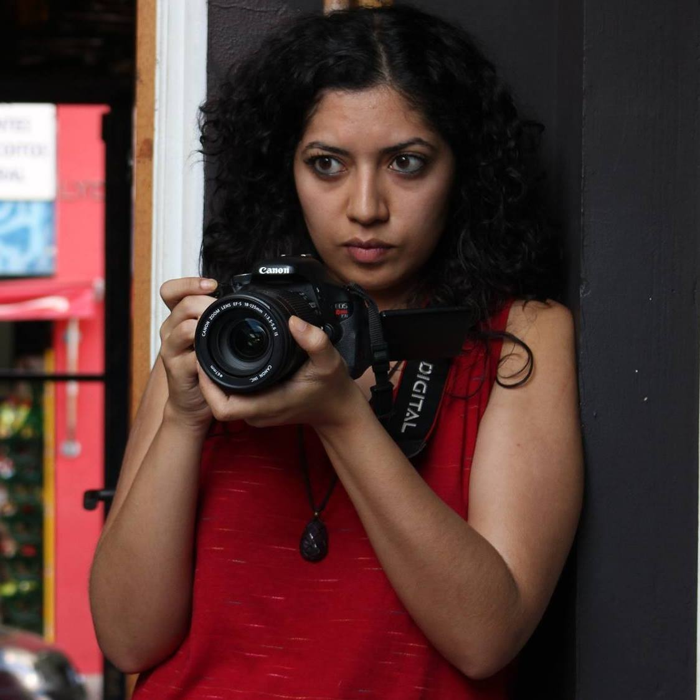
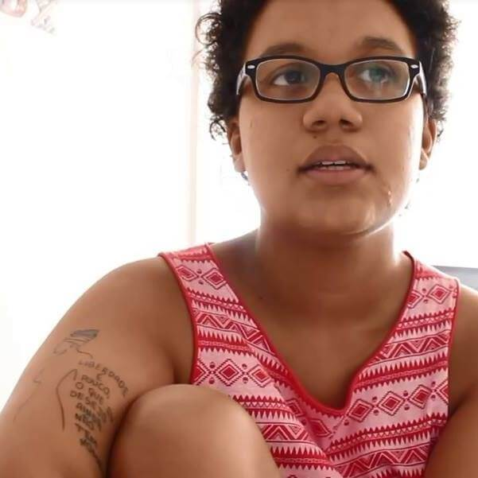

Funções / Direção de Fotografia
As informações de cada perfil são de responsabilidade das profissionais.
Você quer conhecer profissionais de quais estados?
Marcar/Desmarcar todos
CARREGANDO ...
 Beatriz Vieirah (BA)
Beatriz Vieirah (BA)
Beatriz Vieirah
24 anos | São Félix (BA)
b.vieirah1@gmail.com
Graduanda em Cinema e Audiovisual pela Universidade Federal do Recôncavo da Bahia, ativista negra feminista, fotógrafa, coordenadora e idealizadora do Projeto Seminário Cinema Negro Brasileiro. Tem experiência no cinema e vídeo como filmmaker, assistente de direção, câmera, roteiro e preparação de atores, com destaque para as obras cinematográficas, Lápis de Cor, O Cadeado, Entre Passos, Sinfonia de Uma Pequena Cidade, Noite de Baile, telefilme O milagre dos pássaros e o videoclipe Mau Achismo. Ministrou oficinas de Produção de Vídeo e Cinema Negro. Suas pesquisa gira em torno de Mulheres Negras no Cinema. E atualmente está produzindo o filme Em busca de Lélia, enquanto diretora.
Outras atividades de Beatriz Vieirah
Direção |
Pesquisa e desenvolvimento |
Roteiro |
Oficinas e cursos livres
Amostra de vídeo
 Evanize Essi (BA)
Evanize Essi (BA)
Evanize Essi
22 anos | Cachoeira (BA)
evanizeuk@gmail.com
Graduanda em Cinema e Audiovisual pela UFRB, integrante do PET Cinema e do Laboratório de Análise e Criação em Imagem e Som (LACIS). Conselheira suplente do Conselho Municipal de Cultura de Santo Amaro/BA e diretora de projetos na Ápice Empresa Jr. de comunicação.
https://www.facebook.com/focoforcaeflash/
Outras atividades de Evanize Essi
Edição |
Fotografia still |
Iluminação
Amostra de vídeo
 Helô França (BA)
Helô França (BA)
Helô França
25 anos | Cachoeira (BA)
heloisa_1106@hotmail.com
Possui Bacharelado em Artes Visuais pela Universidade Federal do Recôncavo da Bahia (UFRB). Fotógrafa, performer, designer e trançadeira. Na fotografia, tem experiência na área do fotojornalismo, em direção de fotografia, no registro de eventos artísticos, shows, peças de teatro, aniversários, seminários, festivais, fóruns e congressos. Sua produção artística atual dialoga com o campo mítico religioso afro-baiano e tem como temática o corpo da mulher negra, enquanto corpo-templo, ancestralidade e fertilidade, envolvendo fotografia, vídeo arte, ilustrações e performance.
Outras atividades de Helô França
Fotografia Still |
Oficinas e cursos livres
Amostra de vídeo
 Karoline Maia (SP)
Karoline Maia (SP)
Karoline Maia
22 anos | São Paulo (SP)
karolinemaias@gmail.com
Sou formada em Rádio e TV, criadora e produtora das web-séries Nossa História Invisível e Cultura das Bordas. No audiovisual, atuo na direção de fotografia, edição e finalização.
http://maiakarol.tumblr.com/jardimcarolina
Outras atividades de Karoline Maia
Direção |
Edição |
Produção
Amostra de vídeo
 Lygia Pereira (SP)
Lygia Pereira (SP)
Lygia Pereira
24 anos | Campinas (SP)
lygiapsc@gmail.com
Graduanda do último semestre do curso de Midialogia na Unicamp, possui experiência em produções audiovisuais (captação de imagem, direção e produção), sobretudo em documentários. Atuou na direção, roteiro e montagem do curta "CEP 05300"; na assistência de produção do documentário "Jogo Truncado", produzido pelo Canal Futura; na co-edição do coletivo de mídia independente Ô, Xavante!. Possui experiência com produção cultural, tendo trabalhado na 7ª Bienal de dança do Sesc de Campinas.
https://lygiapereirablog.wordpress.com/
Outras atividades de Lygia Pereira
Assistência de direção |
Assistência de fotografia |
Continuidade |
Coordenação de projetos |
Direção |
Edição |
Exibição |
Fotografia still |
Pesquisa e desenvolvimento |
Produção
Amostra de vídeo
 Maíra Zenun (DF)
Maíra Zenun (DF)
Maíra Zenun
34 anos | Brasília (DF) e Lisboa (Portugal)
mairazenun@yahoo.com.br
Fotógrafa e investigadora, com formação nas áreas da sociologia e do cinema, desde 2007 desenvolvo trabalho autoral e coletivo, em imagens, vídeos e textos poéticos, expostos em coleções privadas, publicações impressas, virtuais, festivais, mostras, livros e blogs.
http://floresdemaiomairazenun.blogspot.br
Outras atividades de Maíra Zenun
Cineclubismo |
Oficinas e cursos livres |
Pesquisa e desenvolvimento |
Produção |
Roteiro
Amostra de vídeo
Mariani Lima (SP)
Mariani Lima
25 anos | Campinas (SP)
mariani_lima@hotmail.com
Formada em Cinema e Audiovisual na UFPel, atualmente trabalho como cinegrafista e editora freelancer em Campinas. Também sou Audiodescritora certificada.
http://www.vimeo.com/mariani
Outras atividades de Mariani Lima
Assistência de Direção |
Atuação |
Direção |
Edição |
Fotografia Still |
Oficinas e cursos livres |
Roteiro
Amostra de vídeo
Naira Evine (AL)
Naira Evine
23 anos | Maceió (AL)
naira.nai@gmail.com
"Pós Graduanda em Cinema e Linguagem Audiovisual, comunicóloga formada em Rádio e TV pela UESC. Convive com o mundo da arte desde pequena, com 13 anos aprendeu com seu pai a fotografar e ao longo dos anos foi se profissionalizando na área. Tem experiência profissional em produções audiovisuais, TV, fotografia e docência. É documentarista, diretora , diretora de fotografia, assistente de direção, roteirista, videomaker, editora de imagens e fotógrafa. Entende a grande importância de usar o audiovisual como ferramenta de combate às opressões. Se identifica como mulher negra e lésbica."
Outras atividades de Naira Evine
Direção |
Edição |
Fotografia still |
Gerência de mídia
Amostra de vídeo
 Natalie Matos (MG)
Natalie Matos (MG)
Natalie Matos
21 anos | Belo Horizonte (MG)
natalie.m.moura@gmail.com
A única certeza que mora em mim é a de que a cada passo aprendo algo novo e construo minha identidade. Como uma árvore que cresce regada ao amor e às dificuldades, dá bons frutos e flores, mas também amadurece antes da hora e às vezes até mesmo cai, mas, sempre lembra que tudo que se vive fortalece suas raízes. E sempre quando eu precisar vou ao meu interior e discuto comigo, para entender esse meu eu que às vezes recusa falar e prefere apenas sentir. Gradua em Cinema e Audiovisual e Técnico em Artes Visuais, hoje tenho projetos de visibilidade ao protagonismo da mulher preta e a juventude periférica.
http://nataliem-moura.wixsite.com/nataliematos
Outras atividades de Natalie Matos
Animação |
Assistência de Direção |
Captação de Recursos |
Captação de Som |
Cenografia |
Continuidade |
Correção de cor |
Direção |
Direção de Arte |
Edição |
Fotografia Still |
Iluminação |
Mixagem e efeitos sonoros |
Pesquisa e desenvolvimento |
Preparação de Elenco |
Produção |
Roteiro
Amostra de vídeo
 Pricilla Costa (PA)
Pricilla Costa (PA)
Pricilla Costa
23 anos | Belém (PA)
costa.pricilla@hotmail.com
Idealizadora e Fundadora do Coletivo Audiovisual Tudo Preto!, em Belém do Pará.
Outras atividades de Pricilla Costa
Assistência de fotografia |
Continuidade |
Direção |
Roteiro
Amostra de vídeo
 Safira Moreira (RJ)
Safira Moreira (RJ)
Safira Moreira
25 anos | Rio de Janeiro (RJ)
safiramoreira1@gmail.com
Safira M. nasceu em Salvador/BA. No primeiro semestre de 2016 formou-se no curso de cinema ofertado pelo Centro Afrocarioca de Cinema (Zózimo Bulbul), onde realizou como assistente de fotografia o curta O Jali. Foi videomaker no videodança do projeto ICÓ, a ser finalizado em nov/2016. Participou da oficina Videodança e as poéticas do plano sequencia do festival Dança em Foco, onde aprimorou as técnicas e teorias acerca do videodança. E atualmente dirige o videodança Corpo-Veleiro. E desenvolve mais dois projetos individuais de audiovisual Projétil e Um vestido para Carolina Maria de Jesus, ambos a cerca das vivências/memórias do corpo negro. Estuda na Escola de Cinema Darcy Ribeiro.